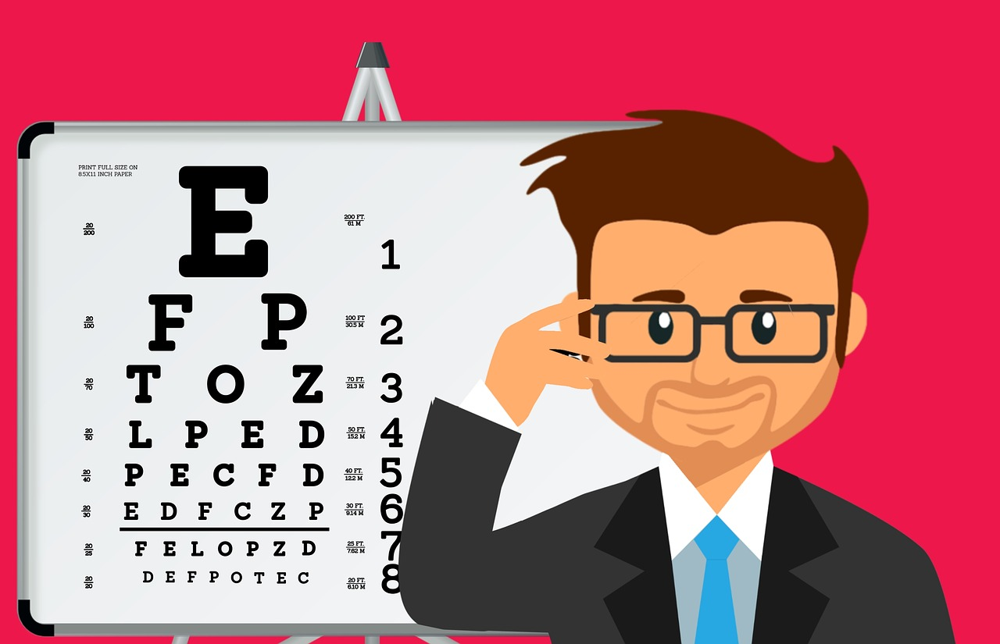
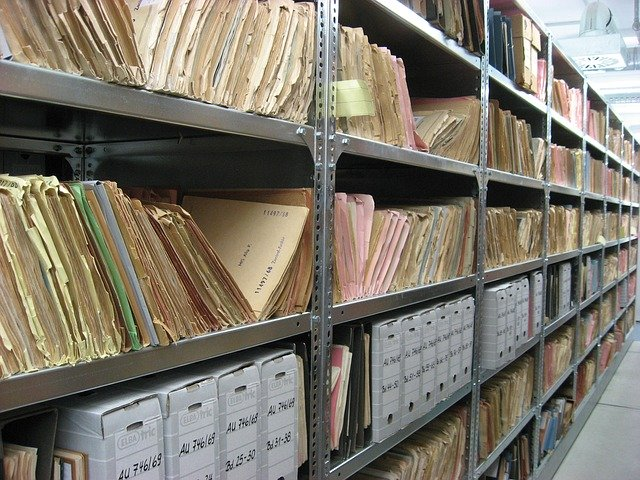
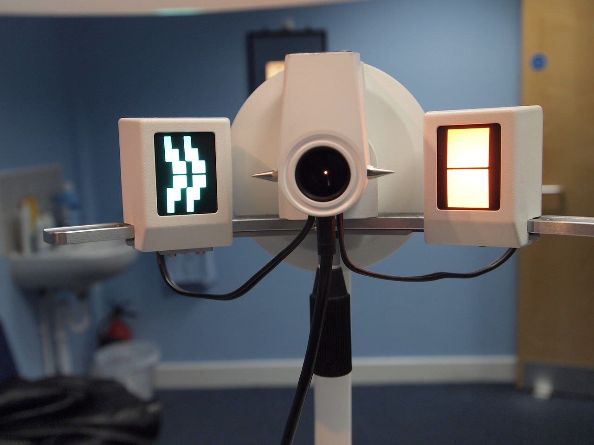

A propos
Ophtalmologiste de l'Université de Lille, ex-attaché en premier au CHU de Brest, le Docteur Danièle Floch-Baillet est installée à Landivisiau depuis 1985, où elle reçoit les patients du lundi au vendredi (sauf jeudi) et le samedi matin.
Après près de 45 ans d'exercice, le Dr Floch-Baillet a cessé son activité le 30 juin 2019 pour raisons de santé et coule à présent une retraite bien méritée.
Elle remercie ses patients pour leur fidélité durant toutes ces années et est très touchée par les nombreuses marques d'attentions reçues au cours de ces derniers mois.
En l'absence de successeur, ce site web est destiné à informer la patientèle de la marche à suivre concernant le futur de leur prise en charge ophtalmologique.
Actualités

17 Mars 2020
En raison de la crise sanitaire actuelle, les permanences de remise des dossiers sont annulées jusqu'à nouvel ordre. Il reste possible de contacter le cabinet par email et/ou courrier postal (voir rubrique Contact). En sa qualité de professionel de santé, le Dr Floch-Baillet vous encourage vivement à rester confinés, limiter les sorties au strict nécessaire et respecter les mesures barrières. Prenez soin de vous et de vos proches.
30 Juin 2019
Fermeture définitive du cabinet suite au départ en retraite du Dr Floch-Baillet.
26 Juin 2019
Parution dans le Télégramme de l'annonce indiquant la fermeture définitive du cabinet
Retrait des dossiers

Le Dr Floch-Baillet n'ayant pas de successeur, les patients sont invités à prendre contact avec le cabinet afin de retirer leurs dossiers médicaux.
Modalités de retrait des dossiers jusqu'au 30 juin 2020 / vente du local
Le retrait des dossiers patients s'effectue préférentiellement au cours des permanences organisées régulièrement au cabinet. Ce dispositif permet non seulement une remise sécurisée des dossiers (remise en main propre contre signature) mais permet également au Docteur de s'entretenir personnellement avec chacun afin de l'orienter au mieux pour son suivi à venir en fonction des spécificités de son dossier.
Ces permanences se tiendront régulièrement (au minimum une fois par quinzaine, jour et heure variables) durant un an soit jusqu'au 30 juin 2020, ou jusqu'à vente du local si celle-ci précède cette date.
Les dates et heures de ces créneaux de permanence sont communiqués "au fil de l'eau" sur le répondeur téléphonique et ce site web (rubrique Actualités) ainsi que par affichage sur la porte du cabinet. Il est possible de retirer le dossier d'un tiers de confiance (familles et proches) avec l'accord de celui-ci.
Modalités de retrait des dossiers hors permanences
La remise en main propre des dossiers restera possible à Morlaix à compter de la vente du local. Nous contacter (rubrique Contact) pour plus d'informations.
Pour les gens ne pouvant pas se déplacer: un envoi postal des dossiers est possible, merci d'envoyer une enveloppe (format A5 minimum) timbrée et libellée à votre adresse. Ne pas hésiter à prendre contact en amont avec le cabinet afin d'avoir une idée plus précise du nombre de timbres.
FAQ ophtalmo

Réponses à des problématiques fréquemment rencontrées par les patients :
Section du site en construction
Mon généraliste peut-il renouveler mon ordonnance médicamenteuse, d'habitude fournie par mon ophtalmo ?
Oui. Votre médecin traitant est habilité à renouveler l'ordonnance médicamenteuse que vous obtenez habituellement auprès de votre ophtalmo. Cela est particulièrement adapté dans le cas des patients sous traitement régulier (ex: glaucome), qui ne doivent l'interrompre sous aucun prétexte et certainement pas celui du délai d'attente trop long chez votre nouvel ophtalmo. Pour ce faire, il est nécessaire que vous ayez votre/vos dernières ordonnances médicamenteuses ; le Dr Floch-Baillet se tient également à la disposition de votre généraliste (voir rubrique Contact) pour toute précision utile.
En cas d'"urgence" (plus de traitement et pas encore eu de rendez-vous chez votre généraliste), votre pharmacien peut être en mesure de vous "dépanner" à titre exceptionnel et sur présentation de votre ordonnance (renouvellements longue durée exclusivement). Le Docteur attire votre attention sur le fait qu'un renouvellement d'ordonnance n'est pas un motif de consultation en urgence chez un généraliste et qu'il convient de prendre vos responsabilités pour anticiper vos prises de rendez-vous.
J'ai cassé mes lunettes et mon ophtalmo n'est plus en activité, que faire ?
Où trouver un nouvel ophtalmo / vers qui me diriger ?
Contact
Email: dflochbaillet@gmail.com
En raison de la fermeture définitive du cabinet et donc à terme de la vente du local, l'email demeure le contact privilégié.
Téléphone: 02.98.68.06.73
Adresse: 7 rue Georges Pompidou 29400 Landivisiau